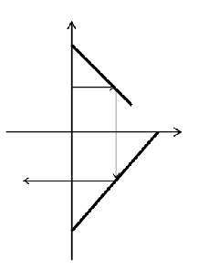

第一行四个整数x，y，dx，dy。表示定向激光发射装置的位置是(x,y)，方向是(dx,dy)。
第二行一个整数n，表示一共有n个激光偏转装置。
以下n行，每行五个整数x1，y1，x2，y2，a，b表示一个激光偏转装置是(x1,y1)到(x2,y2)的一条线段
其偏转系数λ=a/b。
n<=100，所有坐标与a和b的绝对值不超过1000，a、b均非0。保证所有的偏转装置没有交点。激光发射起始点不在
任何偏转装置上。方向向量不为零向量
0 2 1 0
2
0 4 3 1 1 1
4 0 0 -4 1 1
1 2